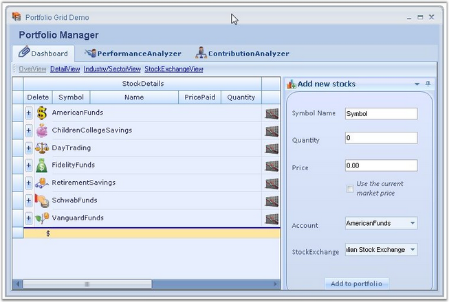
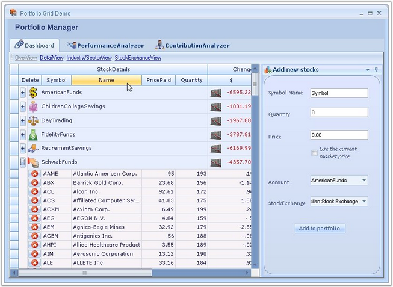
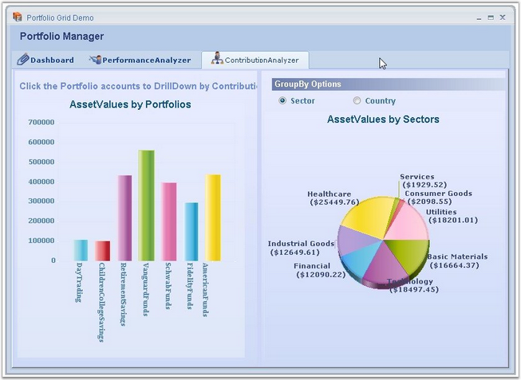
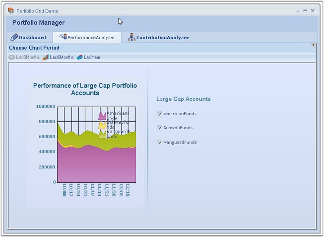

The user can simulate a Portfolio Manager application by using Essential Grid. It allows you to track all your investments and assets in stocks and mutual funds. It provides you with an insight on current market pricing that would help to plan your future investments.

Figure 381: Portfolio Manager
Refer the following sample browser for more details:
<Install Location>\Syncfusion\EssentialStudio\[Version Number]\Windows\Grid.Grouping.Windows\Samples\2.0\Product Showcase\Portfolio Grid Demo
Example : This sample comes with three modules whose features are explained below.
Dashboard : This is the place where you can track the status of all your investments. It comes along with a variety of views:
· Overview - Provides a consolidated view of your mutual fund holdings. You can get useful information on your investments such as rate of change per day, current market price, total returns, etc. You have options to add or delete desired stocks.
· Detail View - Provides a more detailed view, allowing you to get the stock details of the mutual funds.
· Industry/Sector View - Provides a consolidated view of your stock holdings.
· Stock Exchange View – Displays the details with respect to the individual stock exchange.

Figure 382: Portfolio Manager-Dashboard
Contribution Analyzer : This module illustrates the contributions of different stocks for every portfolio account in a graphical representation by using chart controls. Click the desired portfolio account on the left side chart to view its contributions.

Figure 383: Portfolio Manager-Contribution Analyzer
Performance Analyzer : This module does a performance analysis and displays the market history for the top three large cap accounts. You have options to view the history for last three months, last six months, and last year.

Figure 384: Portfolio Manager-Performance Analyzer